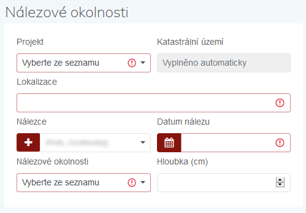

Návod pro spolupracovníky
Petr Pajdla ![]()
David Novák
Jan Mařík
Balázs Komoróczy
Olga Lečbychová
Tomáš Chlup
Róbert Antal
Původně zveřejněno jako…
Úvod
AMČR-PAS (Portál amatérských spolupracovníků a evidence samostatných nálezů) byl vytvořen pro podporu součinnosti dobrovolných spolupracovníků a oprávněných organizací při provádění archeologických výzkumů metodou povrchové prospekce, včetně využití detektorů kovů. Úkolem AMČR-PAS je vytvořit podmínky pro formalizaci a zároveň usnadnění této spolupráce při současném respektování platných zákonných norem čr.
Modul AMČR-PAS naleznete po přihlášení na https://amcr.aiscr.cz/.
Webovou stránku amčr–pas pak zde http://www.archeologickamapa.cz/pas.
Principy spolupráce
Modul AMČR-PAS je založen na spolupráci amatérských badatelů s archeology z organizací s oprávněním provádět archeologický výzkum. Prvním krokem je tedy nalézt v regionu, kde chcete svoji badatelskou činnost provozovat, organizaci s oprávněním provádět archeologický výzkum, kde bude archeolog takové spolupráci nakloněn a ochoten Vaši amatérskou badatelskou činnost zaštítit. Pokud dojde ke shodě na vzájemné spolupráci, vstupuje do celého procesu modul AMČR-PAS, který usnadní a zformalizuje většinu kroků amatérského výzkumu.
Vyhledávání archeologických nálezů pomocí detektoru kovů je jednou z metod archeologického výzkumu. Archeologický výzkum může být prováděn výhradně organizací k tomu oprávnenou a na území, které je vymezeno platnou dohodou dané organizace s av čr. Každý výzkum musí být registrován v Archeologické mapě České republiky (AMČR) ve formě projektu, který má svého vedoucího, který je pracovníkem dané oprávněné organizace.
Veškeré archeologické nálezy a jejich nálezové okolnosti musí být evidovány. V ideálním případě by základní evidence měla proběhnout přímo v místě nálezu. V případě technických překážek (nedostupné internetové připojení, spolupracovník není vybaven chytrým telefonem apod.) by mělo k evidenci nálezu dojít bez zbytečných odkladů po návratu z terénu. Jelikož archeologické nálezy jsou učiněné v režimu archeologického výzkumu, je vyloučeno požadovat výplatu odměny podle § 23 památkového zákona.
Nutným předpokladem navázání spolupráce s oprávněnou organizací je účast na školení, jehož obsahem by měly být právní podmínky celého systému, metodika práce v terénu, dokumentace nálezů a způsob užívání AMČR-PAS.
Modul AMČR-PAS
Registrace a přihlášení
Pro přihlášení do aplikace slouží emailová adresa a heslo. Nutná je předchozí registrace.
Povinnými položkami pro registraci jsou:
- jméno
- příjmení
- platná emailová adresa
- organizace – pro veřejnost obvykle
[amatérský spolupracovník]
Na uvedený email je automaticky odeslána ověřovací zpráva s odkazem pro potvrzení registrace. Po potvrzení je účet aktivován správcem systému. Aktivace účtů obvykle probíhá v běžné pracovní době.
Úvodní obrazovka

Modul AMČR-PAS je jednou ze součástí Archeologického informačního systému čr (ais cr), resp. Archeologické mapy čr (AMČR). Ve webové aplikaci je v současnosti dostupný modul AMČR-PAS a Knihovna 3D, která slouží pro evidenci 3D modelů a textur relevantních pro archeologii.
Samotný modul AMČR-PAS se skládá z několika karet:
- Zapsat: Zápis nového nálezu;
- Moje nálezy: Výčet nálezů, které jsem zaevidoval;
- Vybrat: Výběr mých nálezů dle zadaných kritérií;
- Spolupráce: Správa spolupráce s archeology.
Spolupráce
Na kartě Spolupráce je nutné nejprve požádat archeologa o spolupráci. Tím vznikne vazba mezi archeologem a Vámi, jakožto spolupracovníkem. Pro navázání spolupráce je nutné znát email daného archeologa pod kterým je registrován v systému AMČR.
Po potvrzení spolupráce archeolog vytvoří Projekt, pod kterým budou Vaše nálezy evidovány. Pro další postup je nutné, aby Vám archeolog sdělil číslo projektu, pod kterým budete své nálezy evidovat.
Zapsat
Karta Zapsat slouží k zápisu samotných nálezů. Ten je možný jak přímo v terénu (aplikace spuštěná přímo v prohlížeči v mobilním telefonu), tak zpětně. V terénu doporučujeme provést následující kroky:
- zaměřit polohu nálezu,
- zapsat hloubku nálezu,
- do pole
Poznámkauvést údaje o kontextu nálezu.
Nálezové okolnosti
První sekcí, kterou je nutné vyplnit jsou Nálezové okolnosti. Zde je nutné vybrat projekt, v rámci kterého byl učiněn nález.
- Vyberu ze seznamu relevantní číslo projektu (jedná se o jediný údaj bezpodmínečně nutný pro první uložení nálezu do systému).
- Přidám detailní popis lokalizace, např. formou parc. č., pomístního názvu (název trati, ulice, polohy aj.). Prosím dodržte následující formát zápisu: Poloha, (parc. č.)
- Identifikuji nálezce (tlačítko
+slouží k přidání chybějícího jména do hesláře). Pokud nechci své jméno u nálezu zveřejnit, lze zvolitanonym, anonym. - Vyplním datum nálezu.
- Specifikuji nálezové okolnosti a hloubku nálezu.

Po prvním uložení změn ve formuláři dojde k přidělení identifikátoru nálezu, který je viditelný v horní části obrazovky. Pod tímto ID bude nález navždy evidován a je vhodné jej využívat např. při označování nálezů.
Lokalizace nálezu
Mapové okno slouží k přesné lokalizaci nálezu. Lze přepínat mezi různými mapovými podklady. Místo nálezu mohu určit několika způsoby.
Ručním zápisem geografických souřadnic. Akceptovány jsou souřadnice:
- wgs-84 uváděné v decimálních stupních, např.
50.0903260, 14.4090983 - s-jtsk uváděné v záporných hodnotách v metrech, např.
-597268, -1161521.
- wgs-84 uváděné v decimálních stupních, např.
V případě práce v terénu s telefonem vybaveným GPS lokalizací pomocí tlačítka
Současná poloha. Pro tuto funkci je nutné povolit v prohlížeči přístup k polohovým údajům zařízení, které používáte.Přiblížením v mapě a vybráním přesného bodu kliknutím na mapový podklad.
Nález
V sekci Nález lze specifikovat dataci nálezu, typ předmětu atd. Vyplnění této části je částečně povinné (období, nález a materiál), informace však reviduje a doplní archeolog v další fázi zpracování.
Uložení
Již po vyplnění vazby na projekt lze rozepsaný nález kdykoliv uložit.
Nahrání fotografie
Posledním klíčovým krokem po uložení celého záznamu je přiložit fotodokumentaci nálezové situace a předmětu, ideálně i s měřítkem. Akceptovány jsou fotografie ve formátu JPG, PNG, TIFF do maximální velikosti 100 MB. Není tedy třeba fotky komprimovat nebo zmenšovat. Pokud si nejste jistí, jak předměty správně dokumentovat, navštivte na webu AMČR-PAS sekci Návody.
Odeslání záznamu
Po vyplnění všech povinných údajů (pole označená červeným vykřičníkem ) a nahrání fotografie je možné záznam odeslat archeologovi pomocí tlačítka Odeslat. Až v tuto chvíli se nález zobrazí archeologovi, se kterým máte navázánu spolupráci a pod jehož číslem projektu byl nález zapsán.
Ve chvíli, kdy dojde k osobní schůzce s daným archeologem a jsou mu předány nálezy, archeolog potvrdí jejich převzetí, případně opraví informace o dataci, typu předmětu atd. Také určí, jak veřejně budou informace o daném nálezu přístupné (např. v případě vzácných nálezů či ohrožené lokality se může rozhodnout informace o poloze nálezu nezpřístupnit).
Moje nálezy a Vybrat
Karta Moje nálezy nabízí výpis veškerých vašich nálezů. Toho využijete právě při uložení rozpracovaného záznamu v terénu s myšlenkou jeho dokončení, např. přidání detailnější fotky aj., později.
Karta Vybrat pak nabízí multikriteriální vyhledávání ve vašich nálezech.
Nález v Digitálním archivu AMČR

Po odeslání záznamu nálezu jej potvrdí osoba pověřená archivací detektorových nálezů na příslušném Archeologickém ústavu av čr. Následně je záznam zveřejněn v Digitálním archivu AMČR v kategorii Samostatné nálezy. Zde jsou zveřejněny všechny archivované nálezy evidované v modulu AMČR-PAS, jejich lokalizace však může být z důvodu ochrany archeologického dědictví zobecněna na okres, v němž byl daný nález evidován.